Workflows
Automate repetitive operations — when something happens in your store, OpsPilot can create tasks, send emails, post to Slack, and more.

Choose Event-based (fires on store events) or Scheduled (runs on a timer).

Track total workflows, active count, success rate, and recent execution history.

View the operational summary, run tests, check history, and pause or edit anytime.
What Are Workflows?
Workflows let you automate repetitive operations. When something happens (a new order, low inventory, abandoned checkout), OpsPilot can automatically create tasks, send emails, post to Slack, log to Google Sheets — or any combination.
Creating a Workflow
Upper card: Event-based (fires instantly on store events). Lower card: Scheduled (runs on a fixed time schedule). Blue "Create custom workflow" button at bottom-right.
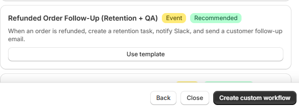
Partial view of template cards from "Choose a starting point." Click "Create custom workflow" (blue button, bottom-right) to build from scratch.
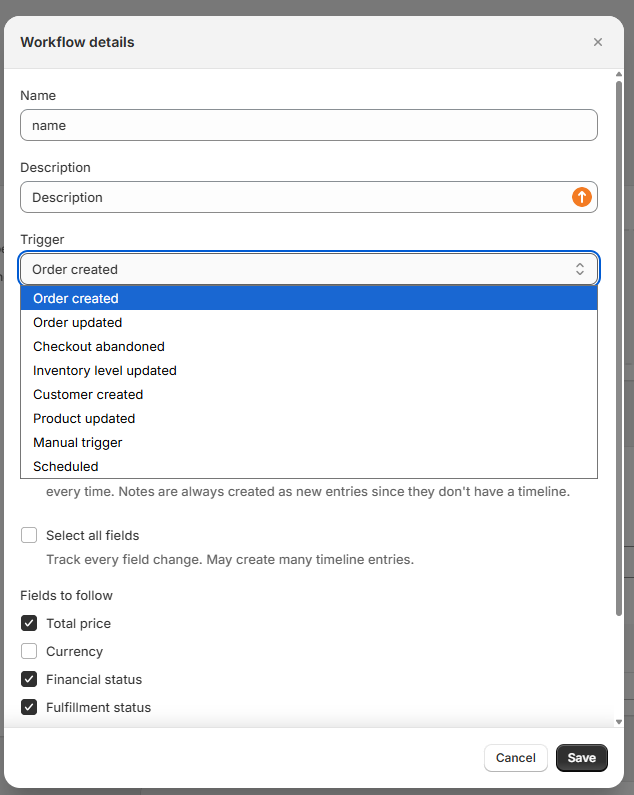
Top: Workflow name field. Center: Open dropdown listing all trigger events (Order created, Order updated, Checkout abandoned, etc.). Bottom-right: Save button.
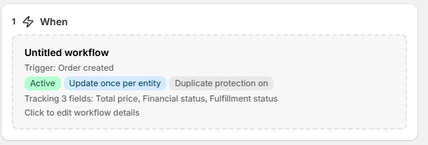
Shows workflow name, selected trigger (e.g. Order updated), green "Active" badge, and "Update once per entity" deduplication toggle.
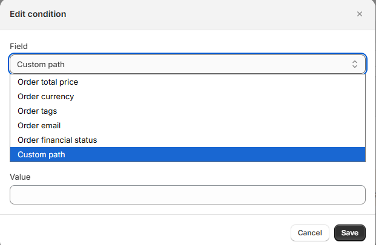
"Edit condition" dialog with field dropdown: Order total price, Currency, Tags, Email, Financial status, or Custom path.
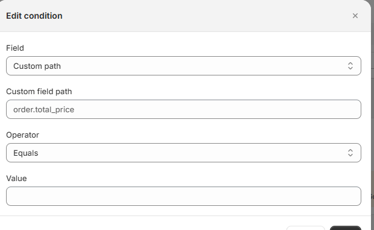
Field set to "Custom path" with a JSON path input (e.g. order.total_price), Operator dropdown (Equals, Greater Than, Contains...), and Value field.
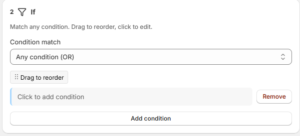
Step 2 "If" header with Condition match (Any/All), condition rows with Remove button, and "Add condition" button at bottom.
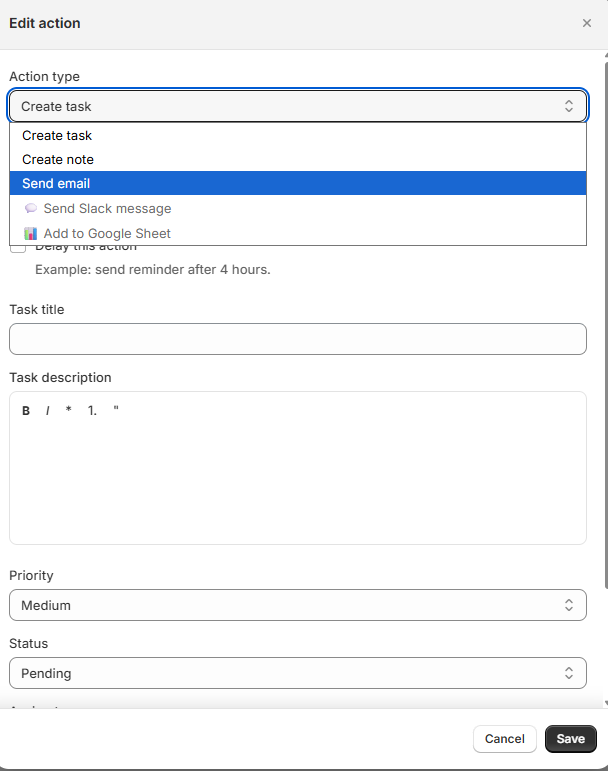
Dropdown open showing: Create task, Create note, Send email, Send Slack message, Add to Google Sheet. Below: task title, description, priority, status, assignee, due date.
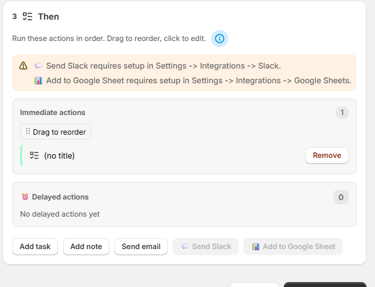
Step 3 "Then" header: "Run these actions in order." Immediate actions section (with drag-to-reorder) and Delayed actions section below. Action type buttons at bottom.

Orange banners warn that Slack and Google Sheets require setup in Settings. Each action has a drag handle and Remove button. Save button at bottom-right.
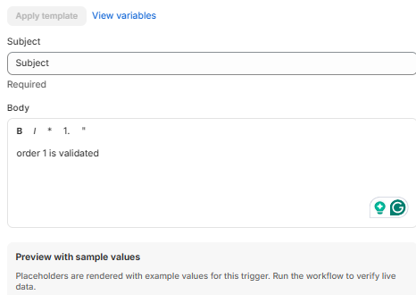
Subject field (supports {{variables}}), Body rich text editor with formatting toolbar, "Apply template" and "View variables" links, and a preview with sample values.
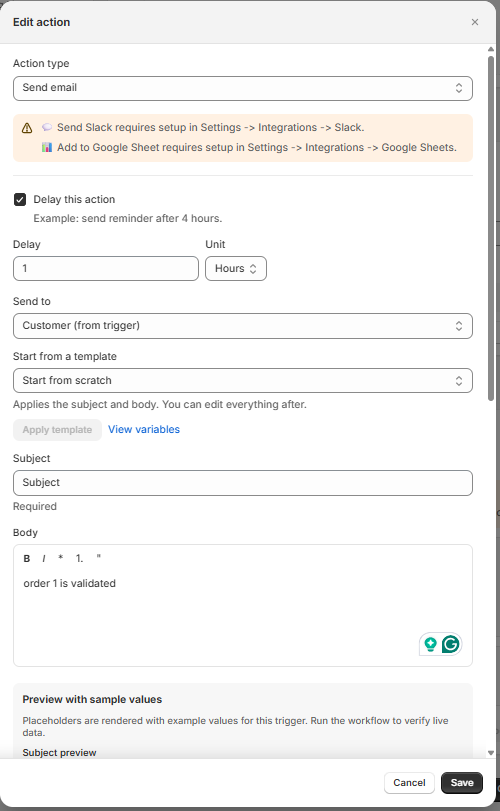
"Action type" set to Send email. "Send to" dropdown: Customer (from trigger), Staff, Admin, or Custom. "Delay this action" checkbox enabled with delay set to 1 Hour. Cancel and Save buttons.
Triggers
A trigger is the event that starts your workflow. You can choose one trigger per workflow.
Event-Based Triggers
These fire instantly when something happens in your Shopify store:
| Trigger | Fires When… | Example Use |
|---|---|---|
| Order Created | A new order is placed | Alert team for high-value orders |
| Order Updated | An order changes | Track payment or fulfillment changes |
| Checkout Abandoned | Customer leaves checkout | Send recovery reminder |
| Inventory Level Updated | Stock quantity changes | Alert when running low |
| Customer Created | New customer account | Welcome email, VIP tagging |
| Product Updated | A product is modified | Review task for quality control |
| Manual Trigger | You click "Run Now" | On-demand escalations |
Scheduled Trigger
Run workflows on a set schedule (daily, weekly, monthly, or custom interval). Perfect for batch operations like daily unfulfilled orders checks.
Conditions (Optional)
Conditions let you filter when the workflow runs. Without conditions, the workflow triggers on every matching event.
Operators
| Operator | Meaning | Example |
|---|---|---|
| Equals | Exact match | financial_status equals "pending" |
| Not Equal | Does not match | fulfillment_status not equal "fulfilled" |
| Greater Than | Numeric comparison | total_price greater than 500 |
| Less Than | Numeric comparison | available less than 10 |
| Contains | Text includes value | tags contains "vip" |
| Exists | Field is present | email exists |
AND / OR Groups
Combine conditions with AND (all must be true) or OR (at least one). You can nest groups for complex logic:
IF (order.total_price > 500 AND order.tags contains "wholesale")
OR (order.total_price > 1000)
→ Run actionsActions
Actions are what happens when the trigger fires and conditions are met. You can add multiple actions — they run in order.
Create Task
Automatically creates a task for your team. Set the title, description, priority, assignee, and due date offset.
Review high-value order #{{order_number}} — Priority: High — Assign To: John — Due: 2 daysCreate Note
Automatically creates an internal note. Set the title, content, entity type, and whether to pin it.
Send Email
Send an email to a customer, team member, or custom address. Supports HTML and template variables.
Send Slack Message
Posts a message to your Slack channel. Supports Slack markdown and template variables.
Add to Google Sheet
Appends a row to a Google Sheets spreadsheet. Great for reports, audit trails, and dashboards. Supports deduplication and custom styling.
Template Variables
Template variables let you insert dynamic data from the trigger into your actions. Wrap them in double curly braces: {{variable_name}}.
| Variable | Value | Available For |
|---|---|---|
{{order_number}} | Order number (e.g., #1234) | Order triggers |
{{order_total}} | Order total price | Order triggers |
{{order_link}} | Link to order in Shopify admin | Order triggers |
{{order_financial_status}} | Payment status | Order triggers |
{{customer_name}} | Customer full name | Customer / Order triggers |
{{customer_email}} | Customer email | Customer / Order triggers |
{{product_title}} | Product name | Product triggers |
{{product_link}} | Link to product in Shopify admin | Product triggers |
{{store_name}} | Your store name | All triggers |
{{event_timestamp}} | When the event occurred | All triggers |

Top: "Task title" (supports {{variables}}). Center: "Task description" rich text editor. Right: Priority (Medium) and Status (Pending) dropdowns. Bottom: "Assign to" (Unassigned) and "Due date offset (days)" input.
Delayed Actions
Add a delay to any action so it runs later instead of immediately. Enable Delay in the action settings and set the duration.
| Delay | Use Case |
|---|---|
| 30 minutes | Send a follow-up email after order confirmation |
| 2 hours | Remind fulfillment team if order still pending |
| 1 day | Check if abandoned checkout was recovered |
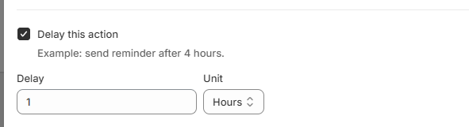
"Delay this action" checkbox (checked). Numeric input set to 1, "Hours" unit dropdown (also Minutes, Days). Example hint: "send reminder after 4 hours."
Deduplication (Smart Repeat Prevention)
OpsPilot automatically prevents duplicates:
- Task Deduplication: When "Create Once Per Entity" is enabled (default), existing tasks for the same entity are updated instead of creating duplicates
- Email / Slack / Sheets: Identical notifications are not sent twice within 24 hours by default
Scheduled Workflows
Run workflows on a repeating schedule instead of reacting to events. Choose a data source (orders, products, customers, or none), set a filter, and pick a frequency.
| Frequency | Configuration |
|---|---|
| Hourly | Runs every hour |
| Daily | Pick one or more times |
| Weekly | Pick a day and time |
| Monthly | Pick a day of month and time |
| Custom Interval | Every X hours/days/weeks |
Workflow Templates
OpsPilot includes 28+ pre-built templates
"From template" header with "All" category filter. Scrollable list: VIP Order Alert, Priority Order, Payment Pending, Refunded Order Follow-Up. Each card has a "Use template" button.
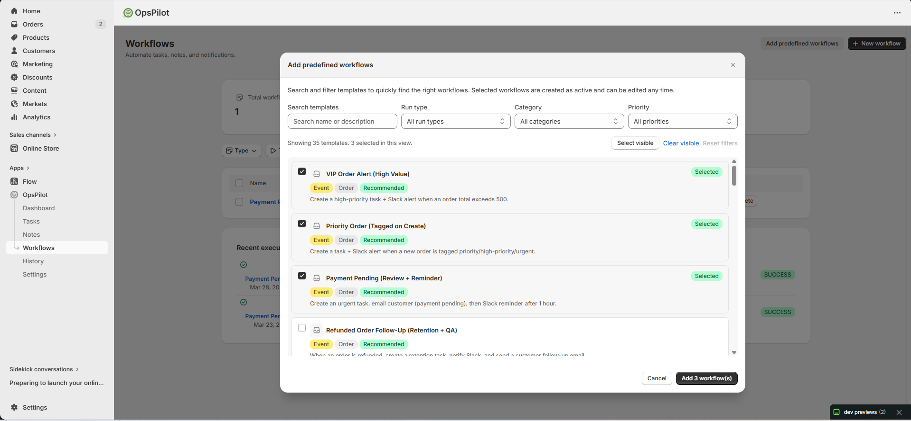
Search by name, filter by Run type/Category/Priority. Check multiple templates (3 selected), then click green "Add 3 workflow(s)" button to create them all at once.
Workflow Management Screens
Four stat cards (Total, Active, Success rate, Recent runs). Type/Trigger/Action filter dropdowns. Workflow table with Name, Status, Actions columns. Recent execution log at bottom.
Operational summary (Active badge, last run, next execution). Frequency, Conditions, Actions counts. "Run now", "Pause", "View run history" buttons. When/If/Then flow cards below.
Testing a Workflow
You can test without waiting for a real event: open the workflow and click Test Workflow